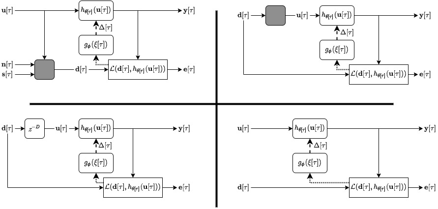
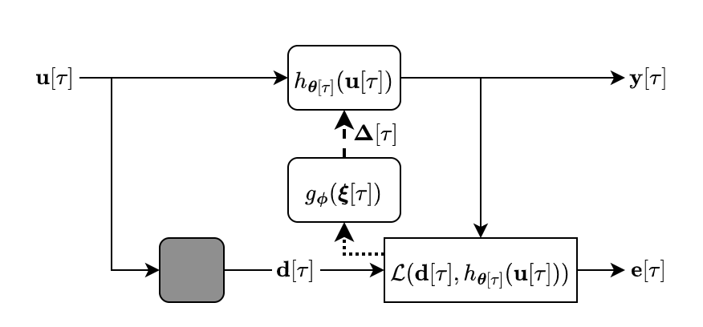
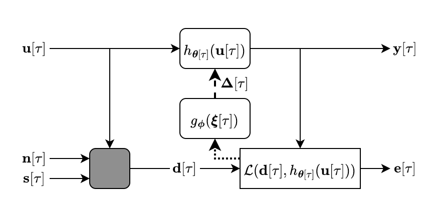
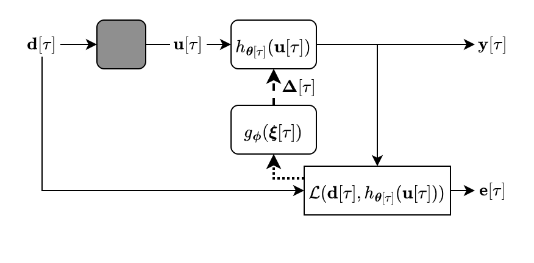
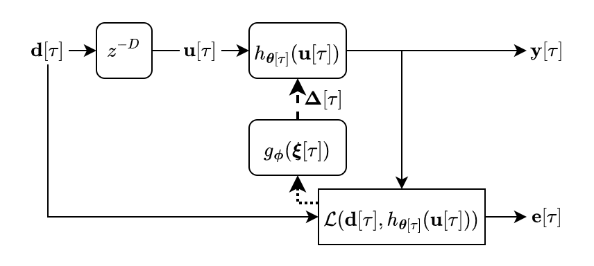
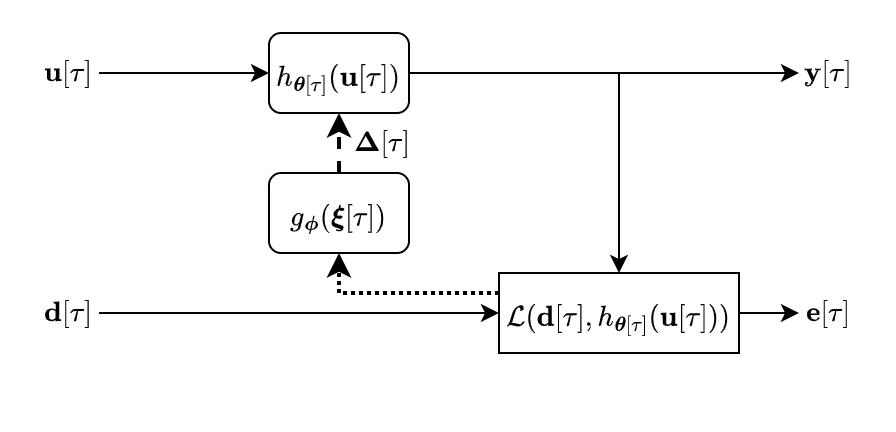

Adaptive filtering algorithms are pervasive throughout signal processing and have had a material impact on a wide variety of domains including audio processing, telecommunications, biomedical sensing, astrophysics and cosmology, seismology, and many more. Adaptive filters typically operate via specialized online, iterative optimization methods such as least-mean squares or recursive least squares and aim to process signals in unknown or nonstationary environments. Such algorithms, however, can be slow and laborious to develop, require domain expertise to create, and necessitate mathematical insight for improvement. In this work, we seek to improve upon hand-derived adaptive filter algorithms and present a comprehensive framework for learning online, adaptive signal processing algorithms or update rules directly from data. To do so, we frame the development of adaptive filters as a meta-learning problem in the context of deep learning and use a form of self-supervision to learn online iterative update rules for adaptive filters. To demonstrate our approach, we focus on audio applications and systematically develop meta-learned adaptive filters for five canonical audio problems including system identification, acoustic echo cancellation, blind equalization, multi-channel dereverberation, and beamforming. We compare our approach against common baselines and/or recent state-of-the-art methods. We show we can learn high-performing adaptive filters that operate in real-time and, in most cases, significantly outperform each method we compare against -- all using a single general-purpose configuration of our approach.
For more details, please see: “Meta-AF: Meta-Learning for Adaptive Filters”, Jonah Casebeer, Nicholas J. Bryan, and Paris Smaragdis, arXiv, 2022. Or, our talk:
If you use ideas or code from this work, please cite our paper:
@article{casebeer2022meta,
title={Meta-AF: Meta-Learning for Adaptive Filters},
author={Casebeer, Jonah and Bryan, Nicholas J and Smaragdis, Paris},
journal={arXiv preprint arXiv:2204.11942},
year={2022}
}We release code and model checkpoints using the metaaf python package developed for this work. For demos of the code, setup instructions, and more, check out the GitHub repo. To listen to model outputs, head to the demo page. We published an early version of these results in Auto-DSP.
We release the inputs, targets, and results for five samples in the test set of each adaptive filter task for all models. These samples are all generated using the Meta-AF codebase in this GitHub repo. Please consult our paper for any experimental configuration details as well as descriptions of our baselines.
We seek to estimate the transfer function between an audio source and a microphone over time as shown below, a task commonly used for room acoustics and head-related transfer function measurements for virtual and augmented reality. We use this task to ablate our model configuration, results are in the paper. For tasks with audio demos, see below.

The goal of AEC is to remove the far-end echo from a near-end signal for voice communication by mimicking a time-varying transfer function as show below. The far-end refers to signal transmitted to a local listener and the near-end is captured by a local mic.

Demos for a single universal model evaluated on single-talk, double-talk, double-talk with a path change, and double-talk with nonlinearities are at the demo page.
In equalization, the goal is to estimate the inverse of an unknown transfer function, while only observing input and outputs of the forward system, as shown below. This is common for loudspeaker tuning.

Demos for constrained and unconstrained filters on the demo page.
We perform dereverberation via multi-channel linear prediction (MCLP) or the weighted prediction error (WPE) formulation as is commonly used for speech-to-text pre-processing. The WPE formulation is based on the idea being able to predict the reverberant part of a signal from a linear combination of past samples, most commonly in the frequency-domain and shown as a block diagram below.

Demos for one, four and eight microphone configurations on the demo page.
For the final task, we perform interference cancellation using the minimum variance distortionless response (MVDR) beamformer. The MVDR beamformer can be implemented as an AF using the generalized sidelobe canceller (GSC) formulation and is commonly used for far-field voice communication and speech-to-text pre-processing. We depict a version of this problem setup below.

Demos for a single universal model evaluated on diffuse and directional interferers are at the demo page.